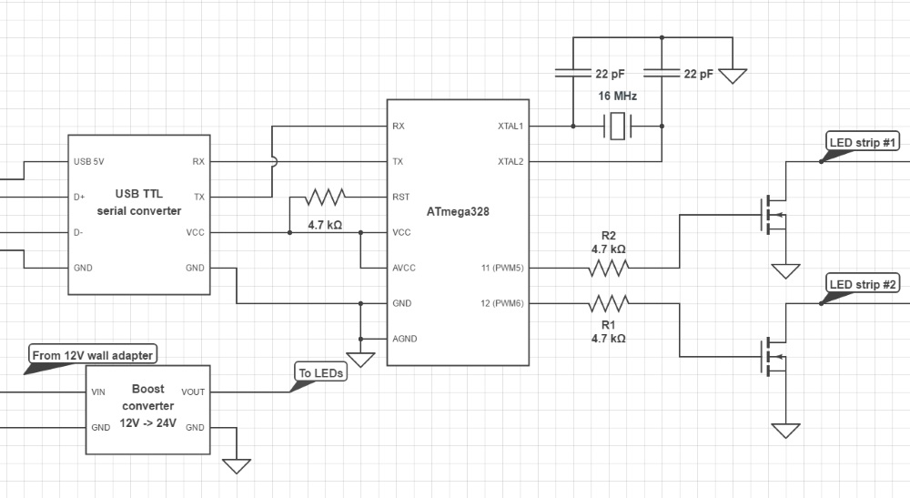

This page contains details of my DIY music controlled LED lights project I did sometime ago.
Here's how it looks (real action starts at 0:20):
The whole projects works realtime (kind of, more info about it later) and the LEDs react to the audio played on a PC.
First of all an LED light strip is required. I used an old Christmas light which had a broken power supply. It has 4 colors arranged into 2 strips (each with alternating colors). The red-blue chain is used for low sounds and the orange(?)-green is used for mid range sounds.
Then a circuit is required to drive the LEDs, basically change the brightness. For that I used an ATmega328 (which is way overkill for this, but there's room for expansion) which drives 2 MOSFETs using PWM, then those MOSFETs drive the LED strips.
Here's a basic schematic:
(Made using www.circuitlab.com)
I used an external 16MHz crystal to make sure the baud rate is correct (because the internal oscillator isn't enough at higher bauds). The 4.7k ohm resistor on the RESET pin is used to keep the ATmega from reseting. The two MOSFETs are connected to the PWM pins using resistors to protect the MCU if a MOSFET fails.
I also had to use a boost converter because the LED strip runs on 24V, but I didn't have a 24V adapter so I used a 12V adapter and boosted the voltage to 24V. The whole strip draws around 80mA on full brightness so a very basic 1A boost converter and adapter does the job.
The LED strip is common anode (+) so the strips are driven by N-channel MOSFETs.
This is how my board looks like:
(It also has some reverse polarity protection, and no heatsinks are required on the MOSFETs because max 50mA will flow through each of them.)
The ATmega328 firmware is very simple, it waits for 2 bytes on the serial port and uses them to set the duty cycle of the PWM pins. The firmware can be found here: INO / HEX
This is nothing for an ATmega328 running on 16MHz, so if you don't want to use all the 6 PWM pins or other GPIOs an ATTiny85 could do the job (because TX is not used on the MCU side it is not required, so 3 IO pins is enough).
The PC software is a little more complicated. It uses the FMOD library to capture audio from an input or a soundcard and using FFT it analyses that. An average is calculated for low sounds and mid sounds which are then used to calculate PWM duty cycles for the ATmega.
Unfortunatelly there is a slight delay which is required by FMOD to make sure it always has some data to work on. As a workaround I have a secondary sound card, so everything is playing on the primary card then the software captures the audio, controlls the LEDs and outputs the audio on the secondary card which is now in sync with the LEDs (the delay moves between 10-100ms).
Using the program it is also possible to change the overall brightness and 2 slope values which are used to configure and x^y function for both LED strips. This function is used to make changes in the brightness very sudden or slow.